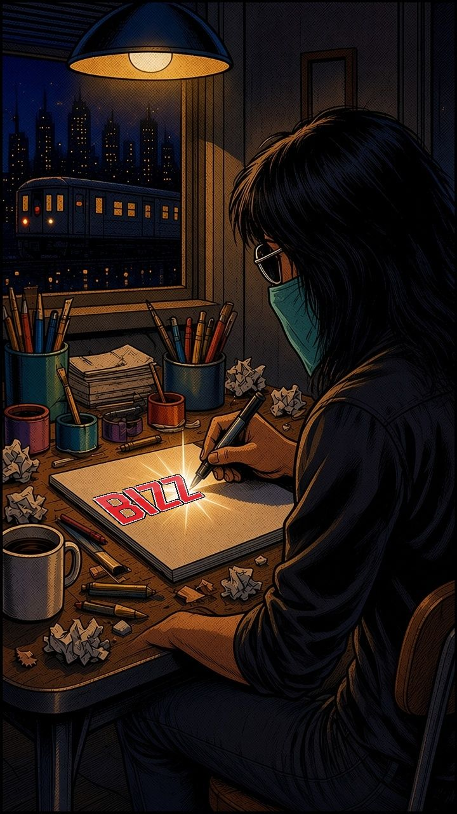

Bonus short · A kitchen table, a felt-tip pen and a homemade button · New York, 1973*Mostly. Narration is sourced, bubbles with a name under them are exact quotes, and anything tagged “Joke!” is made up.
Swipe, tap or use the arrow keys to read →
“Everyone loved it. Paul was a trained artist, so when things got really serious he polished my design, making everything nice and neat. (Thanks, Paul!)”
You won’t find the real logo anywhere in this comic: it belongs to someone with very good lawyers. BIZZ is our invented stand-in, mismatched Z’s and all. The all-night pile of drafts, the wall of tries, the cat, the cheering crowd, the limo dream and the billboards are our comic take. NIKKY, Coca-Cooler and Apfel are invented parodies, not real brands.
Ace Frehley (1951–2025) died on 16 October 2025. Thanks for the sketch, Spaceman.
Sources: Ultimate Classic Rock: “Who Designed the Original Kiss Logo?” (Bryan Rolli, 14 Aug 2023), quoting Ace Frehley, No Regrets (2011), Gene Simmons in KISS: Behind the Mask, Peter Criss, Makeup to Breakup (2012) and Paul Stanley, Face the Music (2014) · Rolling Stone: “Kiss and Tell: Comparing the Original Band Members’ Memoirs” · Logo Design Love: “Ace Frehley on the Kiss logo”, from Ace’s 2011 MTV interview with Eric Spitznagel · Rock & Roll Hall of Fame: KISS, inducted 2014 (archived page).
How to read this comic: captions are narration based on the sources above. Speech bubbles with a name under them are real words, quoted exactly (some shortened, marked “…”). Anything tagged “Joke!”, the sound effects and the bubbles without a name are invented comic gags. The masked rocker is an invented stand-in, not a likeness of Ace; his band mates are shown only as silhouettes.
A non-commercial fan tribute to Ace Frehley (1951–2025). Not affiliated with KISS, Nike, Coca-Cola or Apple. Original art shows no likenesses, makeup designs or logos.